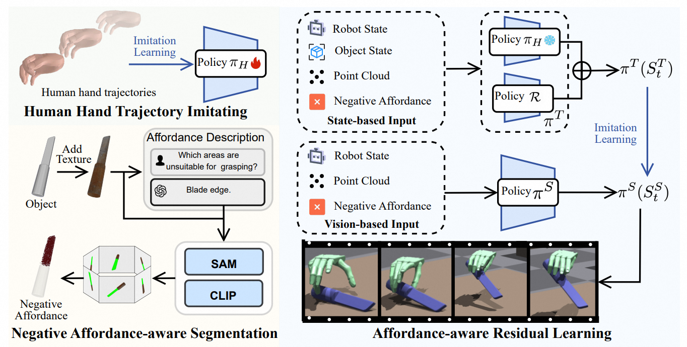

Official AffordDex pipeline: human-motion pretraining, negative-affordance extraction, residual RL, and teacher–student distillation.
AffordDex learns a dynamic grasp that is stable, looks human-like, and avoids functionally wrong contact regions—for example, holding a knife by its handle rather than its blade.
| Module | Paper notation | Released-code tensor | Output |
|---|---|---|---|
| Human prior πᴴ | {R, O, P} | 300D = R 191 + O 16 + unused goal slot 29 + object feature slot 64. During πᴴ training the last 64 values are explicitly zero, so the effective nonzero input is 207D. | 24D action mean |
| NAA preprocessing | mesh → N | No fixed N dimension is reported. NAA exports a negative-region point cloud offline. | Variable-size 3D point set |
| Residual teacher πᵀ / ℛ | {R, O, P, N} | The released state actor is 300D = 191 + 16 + 29 + 64. No separate N tensor is present in this observation layout. | 24D action or residual |
| Vision student πˢ | {R, P, N} | Raw 8,492D = state buffer 300 + 1,024 × (xyzrgb 6 + hand mask 1 + object mask 1). PointNet maps the points to 128D; the final MLP receives 191 + 29 + 128 = 348D. | 24D action, fit to the expert by MSE |
24D action: [0:3] wrist force direction, [3:6] wrist torque direction, [6:24] targets for 18 actuated finger joints. PPO represents a Gaussian over this 24D vector; inference uses its mean.
The reference is a complete human grasping trajectory rather than a terminal grasp pose. Robot and MANO hands are matched through corresponding keypoints. Base joints use a sharper distance decay (λ = 50) than middle joints (λ = 40), and a power penalty discourages both aggressive acceleration and braking. After this stage, πᴴ is frozen.
TexPainter first gives the raw mesh plausible texture, after which six cardinal views are rendered. GPT-4V names one non-touchable part. On every view, a 16 × 16 point grid prompts SAM; NMS with IoU 0.7 removes duplicate masks. Each remaining mask is turned into a visual prompt by blurring its exterior, and CLIP selects the candidate most similar to the negative-part description. The chosen 2D masks are projected back into a 3D point cloud.
In the paper, the frozen πᴴ supplies a human-like nominal 24D action and πᵀ supplies a 24D correction. Both operate on the Shadow Hand’s 6 global wrist DOFs and 18 active finger DOFs. The released ResActorCritic, however, concatenates the two 24D outputs and applies a learned Linear(48, 24); it does not implement the printed element-wise sum literally.
The teacher has perfect object position, rotation, velocity, and a 64D object feature. The student instead receives a 1,024-point partial hand–object cloud reconstructed from five fixed RGB-D cameras. The released training command selects a PointNet encoder; a PointNet+Transformer alternative also exists. State policies use four-layer MLPs with widths 1024–1024–512–512.
ppo_pose path, but that is not the path selected by the script documented for residual training.Meaning: match corresponding robot and MANO keypoints while penalizing instantaneous actuator power. This constrains πᴴ to natural trajectories but does not yet say which object region is functionally safe.
R: robot state · O: privileged object pose and velocity · P: scene/object geometry · N: negative-affordance point cloud. This is the paper’s interface; the released tensor interface differs as documented above.
Conceptually, distance-to-object and distance-to-goal are costs, success is a sparse bonus, and forbidden contact is a cost. The unusual signal is r_negative; the other three are standard goal-conditioned grasp rewards.
Meaning: every fingertip entering within 3 cm of any forbidden point incurs a discrete penalty. This is not a smooth repulsive field and does not reason about palm or link contact.
Meaning: move the object toward a fixed goal and add a success bonus inside a 5 cm radius. These terms provide lifting performance; negative affordance only changes where the hand is allowed to contact.
DAgger trains the student to reproduce the privileged teacher while removing ground-truth object pose from the deployed observation.
| Stage | Training signal | What it learns—and does not learn |
|---|---|---|
| Human prior πᴴ | 0.8 × keypoint imitation + 0.05 × power penalty | Tracks the human MANO trajectory with smooth joint motion. It has no grasp-success, goal-reaching, or NAA reward, so it is not explicitly taught to avoid a blade. |
| Residual teacher πᵀ | Hand–object distance + object–goal distance + success bonus + negative-affordance penalty | Corrects the frozen human motion so that the hand reaches the object, lifts it to the goal, and moves its fingertips away from forbidden regions. |
| Vision student πˢ | DAgger action MSE | Receives no task reward directly; it regresses the 24D action produced by the privileged teacher. |
The policy cannot maximize return by staying away: doing so keeps both distance costs large and makes the success bonus unreachable. Approaching a forbidden region is expensive, but approaching an allowed region reduces the grasp cost and enables goal transport. The resulting objective is therefore “touch the object, but not N.” For example, a successful safe state with 2 cm hand–object distance and 3 cm goal distance scores approximately −0.02 − 0.03 + 1 = 0.95; one forbidden fingertip changes it to approximately −9.05.
Two caveats: the printed reward contains no explicit −‖Δa‖² term, so the residual is not directly forced to remain small. Also, the main equation places minus signs outside the distance and affordance terms while the supplement assigns their λ values negative signs. Applying both literally would double-negate the costs; the text and ablations clearly describe the operational interpretation above.
This is an offline preprocessing step, reported at about 160 seconds per object on an RTX 4090.
| Paper | Primary guidance | What the policy learns |
|---|---|---|
| UniDexGrasp++ | Geometry curriculum | Stable universal grasping |
| DexGrasp Anything | Physics-guided diffusion | Feasible static grasp poses |
| ManipTrans | Human motion + RL residual | Task-specific physical correction |
| DexMachina | Decaying object controller | Track a demonstrated articulated-object trajectory |
| AffordDex | Human motion + forbidden regions | Human-like, semantically safer dynamic grasps |
Method note based on arXiv v4, including the supplementary method and reward definitions. Symbols are simplified for quick reading; the sign-convention caveat above reflects the equations as printed in the paper.